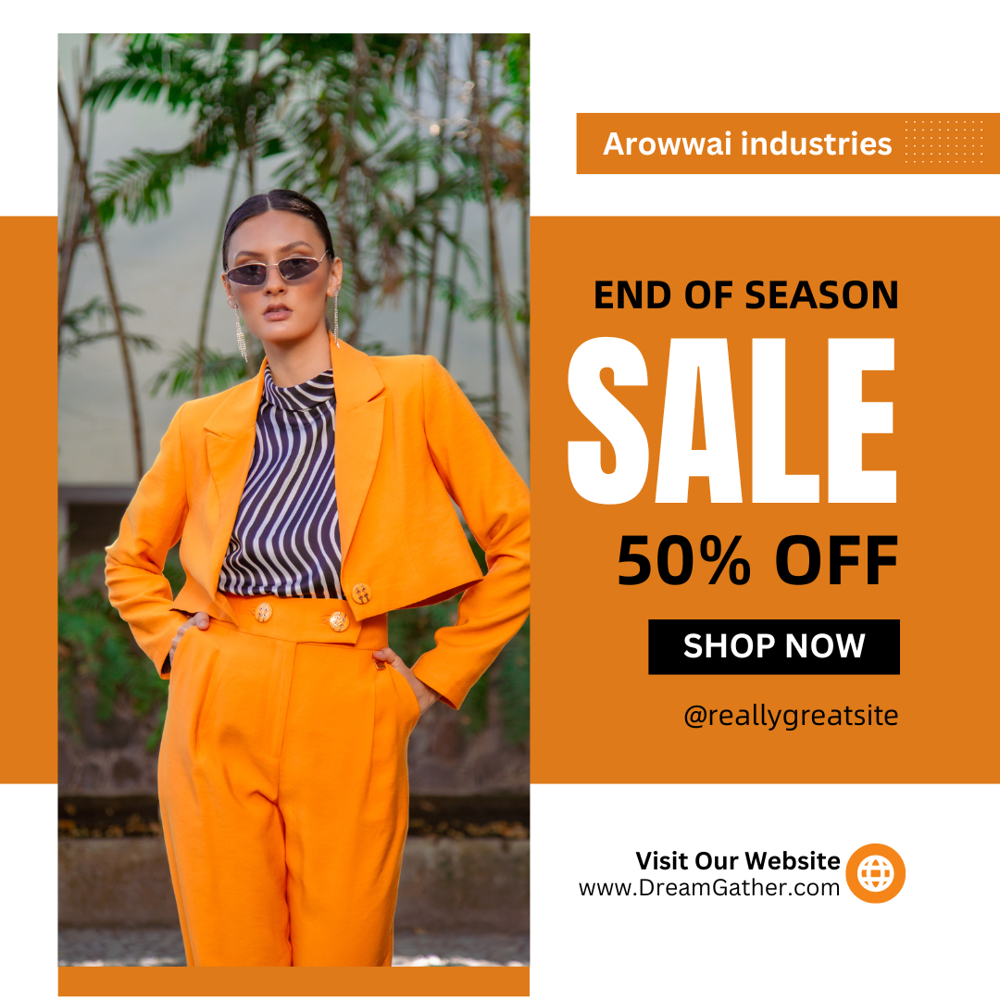

Why I become a Blogger
#Blog #SocialMedia #Traveler

Whether you're a solo adventurer, niche enthusiast, or a family ready to blog about your travels, you'll find many travel blog post examples in this list. From personal storytelling to traveling that will captivate your audience, these successful travel blog samples are the perfect inspiration to start your blog.
Project ideas
#Tech #Projectblog #idea

The project description is created during the initiation phase and serves as a reference throughout the project. The project manager is responsible for writing the project description and guiding the project team using the project description throughout the project's life cycle.
How to get dress on a hiking trip
#hiking #SocialMedia #Traveler

Whether you're a solo adventurer, niche enthusiast, or a family ready to blog about your travels, you'll find many travel blog post examples in this list. From personal storytelling to traveling that will captivate your audience, these successful travel blog samples are the perfect inspiration to start your blog.
Best time to post on YouTube
When is the Best Time to Post on YouTube? We Analyzed 1 Million Videos to Find Out Videos and shorts posted on these days and at these times tend to get higher views.
PodCast Channel
A digital audio or video file or recording, usually part of a themed series, that can be downloaded from a website to a media player or computer: Download or subscribe to daily, one-hour podcasts of our radio show
Fashion Trend

A fashion trend signifies a specific look or expression that is spread across a population at a specific time and place. A trend is considered a more ephemeral look, not defined by the seasons when collections are released by the fashion industry.
Marketing
A fashion trend signifies a specific look or expression that is spread across a population at a specific time and place. A trend is not defined by the seasons when collections are released by the fashion industry.